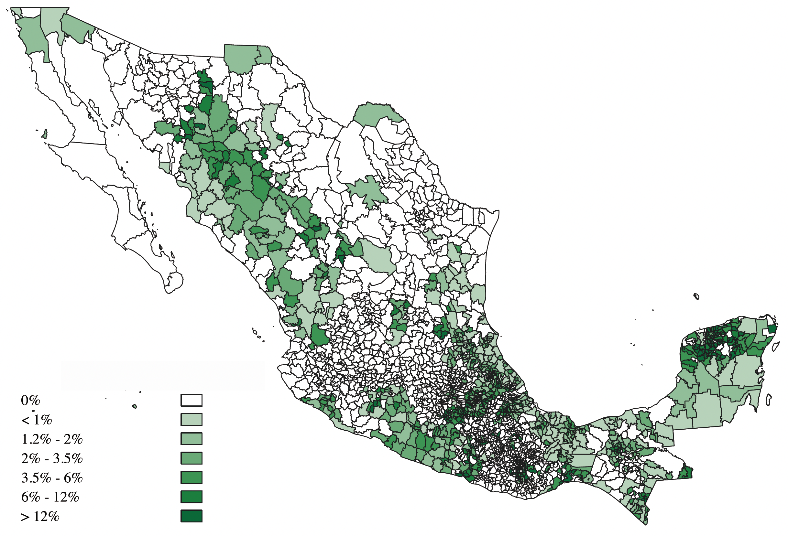
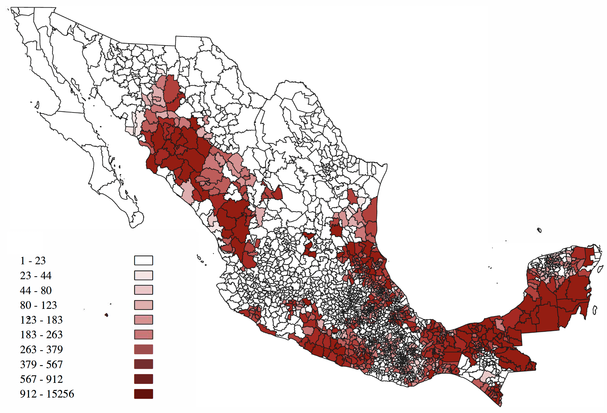

Academics
B.Sc. Thesis: Productivity Effects of Direct Transfers in Rural Mexico: Sembrando Vida
The final project of my undergraduate studies in Economics at COLMEX is a micro-econometric analysis of the productivity effects of
Sembrando Vida, a large scale, unconditional transfers program to rural subjects, enacted by Mexico's federal administration
in 2018. This section provides a general overview of the main results. The whole code repository to reproduce these results can be
found
here
Percentage of Municipalities under Collective Ownership

Number of Beneficiaries by Municipality

For the purposes of this analysis
I seek to answer whether the application of
Sembrando Vida had an effect on agricultural productivity on the rural areas of Mexico. To do so,
I exploited the staggered nature of SV's application, and thus, use the Event Study design proposed by
Borusyak, et. Al (2024).
To analyze this question, I built a simple productivity metric, defined as yield per unit of land. If \(y_{i,t}\) is such productivity metric,
then our methodology seeks to estimate the discrete effect of a unit increase in the number of beneficiaries, conditional on all other regressors:
\[
\beta_m = E[Y_{i,m}(b_{i,m}=1) | \mathbf{x}_{i,m}] - E[Y_{i,m}(b_{i,m}=0) | \mathbf{x}_{i,m}]
\]
Besides productivity, I also analyzed potential changes on the composition of the agricultural sector. The question of the transmission channels of
SV is also important, as it says something about the timing of effects. If the potential effects on productivity are due to increases on capital stock,
we would expect effects to be long-termed. Transfers, however, can also be used to finance short-term consumption or to finance the acquisition of human
capital. Either of these mechanisms would result in a short-term (if at all existing) effect on productivity. To analyze this matter, I tested for changes
in the composition of agriculture on treated municipalities between rain-fed and irrigation (intensive in capital) agriculture using the same
method mentioned earlier.
I found a short-lived, positive and statistically significant effect
on agricultural productivity as well as no evidence that these changes are induced by increases in the capital stock of rural households.
Our results point to a severe lack of follow-ups from local authorities to the program's beneficiaries, limiting its potential effects.
Further research is needed to determine the transmission mechanisms of this policy.
Instructor: Alberto Gallegos David, Ph.D.
Winter 2024
T.A. Sessions:
Debating
Another one of my passions is academic and competitive debating. Because of this, I have participated on a variety of British
Parliamentary Debating championships over the last few years. I also coached the debating team from
Instituto Tecnológico Autónomo de México on the academic year
2023-2024. During this academic term, students from ITAM became national Finalist and world Quarter-Finalist.
Training sessions at ITAM
To contribute to the preparation of other teams, I am publishing here the sessions used for training at ITAM.
All sessions are based on the debating manual for the
Campeonato Mundial Universitario de Debate en Español Colombia 2024.
In the last part, I've also borrowed heavily from the
Handbook of Argumentation Theory by Frans H. van Emeren et al. Due
to their length, most sessions span more than one class. All course information, as well as other relevant information can be
found
here.
Session 0
I provide a general introduction to the material of the course. Highlighting the material to be covered, and the
big-picture reasons as to why doing debate, and in particular, British Parliamentary. An introductory activity is also
included for students to start developing critical thinking tools. Finally, students are encouraged to take the Political
Compass test, as a starting point for questioning preformed beliefs.
Session 1
I provide a general overview of British Parliamentary debating, highlighting its key features and differences with other
debating models, as well as the different roles each speaker has. I also go over the basics of participating in a BP championship.
Participants are encouraged to engage in an activity aimed at showing basic argumentation skills. Finally, I present a general
overview of future events students might participate in.
Session 2
This is the first content-heavy session, focused in introducing participants to three concepts widely used on BP debating:
(1) An average reasonable voter; (2) Burden of proof and metrics; and (3) Framing. Participants are also introduced to the
way persuasion works and is evaluated within BP. Multiple real examples are offered to provide excercises to apply this
concepts to real life debates. Participants are also introduced to the two types of motions often debated on BP, which are
the topic of the following sessions. It is adviced to divide this content into two or three 1:30 hour sessions.